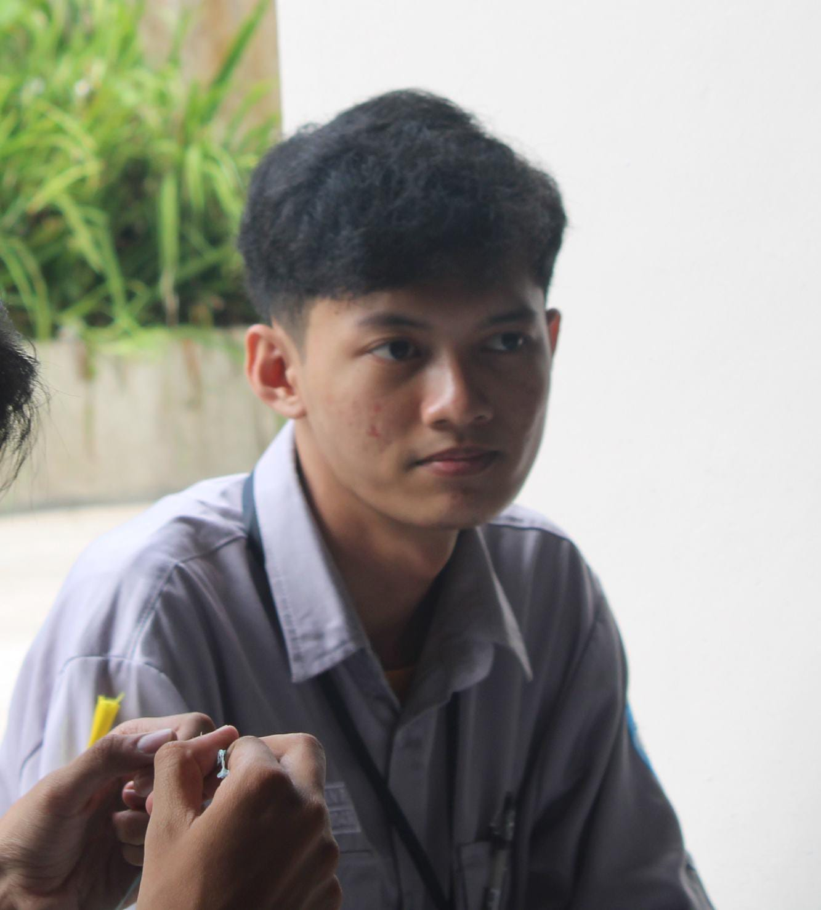

Halo, saya Alif Rachman Rosyidin
Saya mahasiswa Teknologi Informasi yang tertarik dengan teknologi, dunia digital, dan pengembangan diri. Selamat datang di website pribadi saya xixixi
Kenalan YukTentang Saya
Perkenalkan, nama saya Alif Rachman Rosyidin. Saya adalah CEO sekaligus Founder dari perusahaan ARR GROUP, sebuah holding company yang bergerak di bidang teknologi informasi, transportasi, logistik, kuliner, perhotelan, dan pusat perbelanjaan. Dalam struktur bisnisnya, perusahaan ini menaungi berbagai anak perusahaan strategis, seperti PT ARR Digital Solusindo di bidang teknologi informasi, ARR Trans di layanan bus antar provinsi, ARR Cargo di sektor logistik, ARR Resto di industri kuliner, serta PT ARR Hospitality Industry Nusantara yang mengoperasikan bisnis perhotelan dan pusat perbelanjaan.
Pendidikan
Universitas
Universitas Bina Sarana Informatika
Program Studi: Teknologi Informasi
Tahun: 2023 - Sekarang
SMA
SMA NEGERI 1 BOBOTSARI
Tahun: 2019-2023
Hobi dan Minat
Hobi utama saya sebelumnya di bidang otomotif. Saya suka memodifikasi kendaraan, tetapi sekarang saya sudah mulai kehilangan minat itu, untuk alasannya saya tidak paham. Selain itu, saya juga suka bermain game, tetapi lagi dan lagi itu dulu. Sekarang saya juga sudah tidak terlalu banyak menghabiskan waktu untuk game. Ya mungkin itu saja.
Proyek Saya
Prototype Pendeteksi Ketinggian Air Berbasis IoT
Proyek sistem pendeteksi ketinggian air untuk membantu mitigasi banjir dan tsunami menggunakan ESP32, sensor, LCD, buzzer, dan notifikasi. Saya mengerjakan proyek ini sampai membuat saya stress ringan.
Website Profil Pribadi
Website ini merupakan website suka-suka dikarenakan saya gabut.
Hubungi Saya
Kamu bisa menghubungi saya melalui email atau media sosial berikut.
Email: aliffffffff@gmail.com